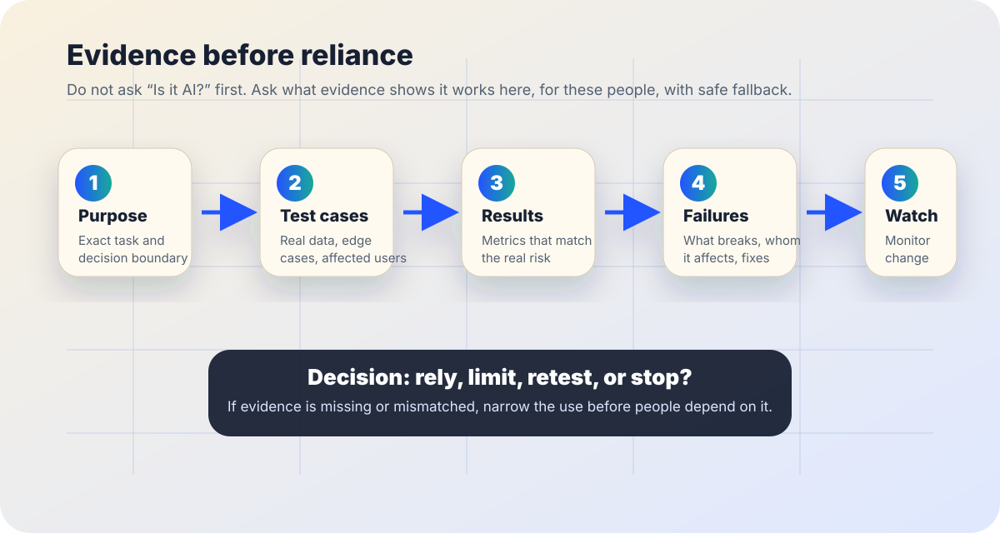

AI evaluation
AI evaluation evidence checklist: ask for proof before reliance.
Use this when a school, workplace, nonprofit, public office, or small team is deciding whether an AI system is ready to help with real work. The goal is not perfect certainty. The goal is to avoid treating a demo, benchmark, or vendor promise as evidence that the tool works safely in your setting.
The short answer
An AI evaluation evidence checklist asks: What was tested, on whose examples, against what baseline, with what failures, under what monitoring, and with what stop rules?
NIST’s AI Risk Management Framework describes trustworthy AI characteristics such as validity and reliability, safety, security, resilience, accountability, transparency, explainability, interpretability, privacy enhancement, and fairness with harmful bias managed. The OECD AI Principles similarly emphasize robust, secure, safe, transparent, and accountable AI. A practical evaluation turns those broad values into evidence people can inspect before relying on a system.

When to use this checklist
Use it before trust becomes habit
- a chatbot, classifier, summarizer, scoring tool, tutor, agent, or recommendation system will shape real decisions;
- a vendor claims high accuracy but does not show methods, limits, or failure examples;
- staff are asked to rely on AI output in records, advice, eligibility, safety, hiring, learning, benefits, healthcare, finance, housing, or public services;
- a pilot is about to become normal workflow or infrastructure.
Do not treat it as a lab protocol
- This page is practical education, not legal, statistical, security, medical, employment, procurement, or compliance advice.
- High-stakes systems need qualified domain, legal, privacy, security, accessibility, labor, and affected-community review.
- If the system affects rights, opportunities, safety, or essential services, “seems useful” is not enough evidence.
Seven evidence checks before relying on AI
- Define the exact purpose. Name the task, user, context, input, output, human reviewer, decision boundary, and things the tool must not do. Evaluation evidence is weak if the use case is vague.
- Compare against a realistic baseline. Ask whether the AI improves on the current process, a simpler tool, a checklist, human review, or doing nothing. A high score is less meaningful without a relevant comparison.
- Test on local examples. Use representative samples from the actual setting, including messy forms, low-quality audio, uncommon names, multilingual text, accessibility needs, edge cases, and cases where the right answer is “do not answer.” Protect privacy while testing.
- Measure errors by consequence. Accuracy alone can hide harm. Separate false positives, false negatives, hallucinated facts, missed warnings, privacy leaks, inaccessible outputs, security failures, and errors affecting specific groups.
- Inspect failure cases. Ask for examples where the AI failed, why it failed, whether the failure is detectable, how people recover, and whether a human can override the output before harm occurs.
- Check monitoring and change control. AI systems can change when models, prompts, data, integrations, policies, or user behavior change. Define who watches performance, incidents, bias, accessibility, security, and drift after launch.
- Name decision rules before launch. Decide what evidence permits limited use, wider use, retesting, rollback, human-only routing, affected-person notice, or stopping the tool. Do not invent the standard after a problem appears.
If nobody can show realistic tests, failure cases, monitoring, and stop rules, the safest decision is usually to narrow the use until evidence catches up.
A minimum evidence bundle to request
| Evidence | What to ask for | Why it matters |
|---|---|---|
| Scope statement | Intended uses, prohibited uses, users, data types, and human review points. | Prevents a narrow tool from silently expanding into a broader decision system. |
| Evaluation method | Test set description, baseline, metrics, sample size, limits, and who performed the evaluation. | Shows whether the numbers match the real task. |
| Disaggregated results | Performance across relevant languages, groups, disabilities, locations, document types, devices, or other local conditions. | Average performance can hide unequal failure. |
| Failure examples | Known failure modes, severe errors, near misses, incident history, and mitigation plans. | Fluent AI output can make serious errors look routine. |
| Human recourse | How people can understand, correct, appeal, bypass, or escalate an AI-assisted result. | Evaluation is incomplete if harmed people have no usable path to repair. |
| Monitoring plan | Owners, review cadence, logging, privacy controls, model-change notice, retesting triggers, and rollback rules. | One-time testing cannot prove future performance. |
A short meeting script
Use this before approving, buying, expanding, or normalizing an AI system.
What exact task are we asking this AI system to perform, and what decisions must remain human-only?
What evidence shows it works on examples like ours, for people like ours, under conditions like ours? What baseline did it beat?
Show us the failure cases: false positives, false negatives, hallucinations, accessibility barriers, privacy issues, security risks, group-level differences, and severe edge cases.
Who monitors the system after launch, who can stop it, and what evidence would make us limit, retest, roll back, or notify affected people?
Warning signs that evidence is too thin
- The strongest evidence is a polished demo, testimonial, or generic benchmark unrelated to your use case.
- The vendor or team reports one accuracy number but cannot explain the test data, baseline, confidence, or error types.
- No one has tested with realistic local data, accessibility needs, low-quality inputs, adversarial prompts, or people affected by the outcome.
- Failures are framed as user mistakes even when the workflow encourages overreliance.
- The system can affect people, but there is no clear path to explanation, correction, appeal, or human support.
- Monitoring is described as “we will keep an eye on it” without owners, logs, review dates, or stop rules.
Good evaluation evidence does not need to be flashy. It needs to be specific, inspectable, relevant, and connected to decisions people can actually make.
Sources and further reading
- NIST — AI Risk Management Framework
- NIST — AI RMF Playbook
- NIST — Artificial Intelligence Risk Management Framework (AI RMF 1.0)
- OECD.AI — OECD AI Principles overview
- W3C WAI — Evaluating Web Accessibility Overview
- European Commission — AI Act regulatory framework overview
- UK Government — Algorithmic Transparency Recording Standard Hub